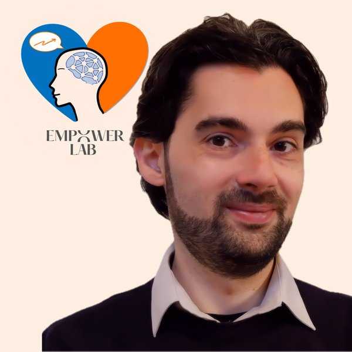

Psicologo · Formatore · Data Scientist · Psicoterapeuta Breve Strategico in formazione
Iscrizione Albo Puglia 8380
Ci sono momenti in cui non ci manca l'impegno.
Ci manca la direzione.
Ci sentiamo bloccati, sopraffatti, insicuri. Studiare diventa più difficile di quanto dovrebbe essere.
Le relazioni ci mettono alla prova. Il lavoro ci pone davanti a scelte che non sappiamo come affrontare.
E spesso finiamo per pensare che il problema sia semplicemente non essere abbastanza.
Il mio lavoro parte da qui.
Non per dirti chi dovresti essere, ma per aiutarti a capire meglio come funzioni, cosa ti sta bloccando e quali possibilità hai per cambiare qualcosa.
Attraverso il supporto psicologico, percorsi di crescita personale, lavoro sull'ansia e sullo stress e interventi sulle difficoltà relazionali, aiuto soprattutto studenti e giovani adulti a costruire maggiore consapevolezza, autonomia e fiducia nelle proprie capacità.
Ma crescere non significa soltanto stare meglio.
Significa anche imparare a scegliere, orientarsi, affrontare le sfide e costruire il proprio percorso.
E per fare questo son convinto che spesso, strumenti validati come test e questionari siano fondamentali per iniziare, monitorare e validare il percorso che si sta facendo insieme.
Per questo affianco all'attività psicologica percorsi di orientamento e coaching di carriera, pensati per chi sta cercando una direzione o vuole ripensare il proprio futuro.
Una parte particolarmente importante della nostra vita passa dall'apprendimento (che oggi non termina quasi mai), per questo mi occupo anche di formazione universitaria e post-universitaria
con percorsi interattivi e concreti per imparare in modo più efficace, e soprattutto senza trasformare lo studio in una lotta di resistenza continua.
In particolare, lavoro con studenti e studentesse di Psicologia che si trovano davanti a materie apparentemente ostiche come Statistica, Psicometria, Teorie e Tecniche dei Test e altre discipline in cui logica, numeri e metodo possono sembrare una matassa impossibile da districare.
L'obiettivo è sempre lo stesso: trasformare la confusione in comprensione, la difficoltà in possibilità e l'insicurezza in maggiore libertà di scelta.
Credo che crescere non significhi diventare qualcun altro, ma imparare a conoscersi e a muoversi nel mondo con maggiore consapevolezza, autonomia e fiducia.
Aiuto persone, soprattutto studenti e giovani adulti, a trasformare insicurezze, stress e momenti di difficoltà in maggiore chiarezza e possibilità di scelta.
Lo faccio attraverso supporto psicologico, percorsi di crescita personale, orientamento e coaching, ma anche attraverso formazione e strumenti concreti per imparare e affrontare meglio le proprie sfide.
Il mio lavoro aiuta le persone a trasformare insicurezze, stress e difficoltà (emotive e/o organizzative) in maggiore chiarezza, autonomia e fiducia nelle proprie capacità.
In breve:
Mi occupo di supporto psicologico (soprattutto per studenti e giovani adulti), gestione dell'ansia/stress accademico, difficoltà relazionali e percorsi di crescita personale.
Accanto all'attività clinica mi occupo di percorsi di coaching di carriera e orientamento.
Supporto l'apprendimento e la formazione a 360°, universitaria e post universitaria con percorsi interattivi e dinamici.
In particolare per studenti/sse di Psicologia, aiuto a districare le matasse logico-matematico in materie come Statistica, Psicometria, Teorie e Tecniche dei Test etc.
Non credo che crescere significhi diventare qualcun altro.
Credo significhi diventare più capaci di essere se stessi.